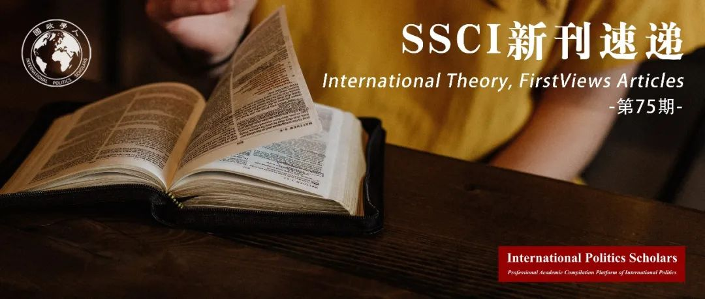

收录于合集 #新刊速递 123个

期刊简介
国际理论(IT)是一个同行评审的期刊，致力于推进世界政治的理论研究，对所有种类和所有学科的理论都是开放的，其目的是作为一个论坛，学者可以在此进行深入的理论探讨，其2019年的影响因子为2，在95种国际关系类期刊中排名第25位。
本期编委
【编译】 赵雷、王川、谢菁、扎西旺姆、崔宇涵
【校对】 赖永祯
【审核】 施榕
【排版】 张湘苹
【美编 】游钜家

本期目录
1. 足球对国际秩序的贡献:世界社会行为体对国际社会欢乐与狂欢式的再生产
Football’s contribution to international order: the ludic and festive reproduction of international society by world societal actors
2. 认知权威时代的全球治理
Global governance in the age of epistemic authority
3. 全球政治范式:对未来，还是仅仅对近期的指导?
The global politics paradigm: guide to the future or only the recent past?
4. 论社会分析中的参与和距离：对我的批评者的答复
On engagement and distance in social analysis: a reply to my critics
5. 一个以分殊性基础的中等国家行为分析框架
Toward a differentiation-based framework for middle power behavior
01
足球对国际秩序的贡献:世界社会行为体对国际社会欢乐与狂欢式的再生产
【题目】 Football’s contribution to international order: the ludic and festive reproduction of international society by world societal actors
【作者】 Bernd Bucher，瑞士富兰克林大学政治学副教授
Julian Eckl，瑞士圣加仑大学政治学博士
【摘要】 有关国际社会与世界社会的关系，近年来无论是在概念上还是在实证上都受到英国学派越来越多的关注。为了补充这一正在发展的研究文献，作者不仅研究了世界社会行为体如何作为规范协调者或规范倡导者对国际社会发挥作用，而且研究了行为体如何对国际社会的再生产做出了决定性的贡献。在本文中，作者超越对行为体类型的普遍关注，而更关注行为体在国际舞台上的实践问题。作者研究了世界体育赛事，特别是国际足联的世界杯和足球基础设施对国际社会的作用。在怀特论述的基础上，作者将世界体育赛事概念化为国际社会所派生的首要制度（这一制度被世界行为体驱动），它在内含于足球场地与节日等主要制度的混合环境下产生。作者发现，世界体育赛事寻求对首要制度(如主权、领土和民族主义)的欢乐和狂欢式的再生产，而这些首要制度突出了国际社会成员如何在共同的规范和价值观的基础上竞争。体育赛事将世界秩序归化为国际秩序，使国际社会在全球层面上的情感体验成为可行的和可取的。在世界体育赛事的中，世界社会行为体进一步巩固而不是挑战国际社会。
In the English School, the relationship between international and world society has recently received increasing attention – conceptually and empirically. Adding to this developing literature, we study how world societal actors not only serve as normative counterpoints to international society or function as norm-entrepreneurs, but decisively contribute to its reproduction. Going beyond the common preoccupation with actor types, we focus on practices that are performed on the international stage. We examine the role which world sport events, especially FIFA’s World Cup and the infrastructure of football, play for international society. Building on Wight, we conceptualize world sport events as a (world societal actor driven) derivative primary institution of international society, which is embedded within the particularly hybrid master primary institution of sites and festivals. We find that world sport events allow for the ludic and festive reproduction of key primary institutions (like sovereignty, territoriality, and nationalism), while they highlight how members of international society compete on the basis of shared norms and values. Naturalizing world order as international order, they make international society emotionally experienceable as feasible and desirable at a global level. In performing world sport events, world societal actors uphold rather than challenge international society.
【编译】 赵雷
【校对】 赖永祯
02
认知权威时代的全球治理
【题目】 Global governance in the age of epistemic authority
【作者】 Vincent Pouliot，麦吉尔大学教授。
【摘要】 根据迈克尔·祖恩的深入分析，当今的全球治理与过去有着质的不同。随着认知权威的兴起，反身性、服务性与请求性已经超越了命令和控制，成为全球治理的关键模式，这导致了新的正当性与争论形式。作者从三个方面探讨了这一观点：第一，各国是否因国际组织“更了解情况”而服从国际组织令人怀疑。在全球治理中，认知权威存在诸多缺陷，政治往往战胜理性。其次，我们不清楚全球等级制（祖恩将其等同于“权威群(pockets of authority)”）是如何从需求和请求中产生的，这正是因为认知权威是如此的不稳定并容易引发争论。第三，尽管当代全球治理在历史上时间不长，而且越来越以服务性权威为基础，但它仍然依赖于继承下来的实践，其正当性原则似乎更接近于传统，而不是反身性。
Today’s global governance is qualitatively different from the past, according to Michael Zürn’s penetrating analysis. With the rise of epistemic authority, reflexivity, service, and request have come to surpass command and control as key modes of global governance, leading to new forms of legitimation and contestation. I engage with this rich and thought-provoking argument on three counts. First, it remains doubtful that states defer to international organizations because the latter ‘know better’. There exist many gaps in epistemic authority and politics often trump rationality in global governance. Second, it is not clear how global hierarchy, which Zürn equates with ‘pockets of authority’, could emerge out of demands and requests, precisely because epistemic authority is so fluid and prone to contestation. Third, as historically young and increasingly based on service authority as it may be, contemporary global governance still rests on a body of inherited practices whose legitimation principles seem closer to tradition than to reflexive justification.
【编译】 王川
【校对】 赖永祯
03
全球政治范式:对未来，还是仅仅对近期的指导?
【题目】 The global politics paradigm: guide to the future or only the recent past?
【作者】 罗伯特·基欧汉（Robert.O.Keohane）,哈佛大学政治学博士，曾任美国政治学会主席，曾任教于布兰迪斯大学、哈佛大学、杜克大学等，现为杜克大学政治系詹姆斯·杜克教授，代表作《霸权之后：世界政治经济中的合作与冲突》（1984），并与约瑟夫·奈合著《权力与相互依赖》（1977）、《国际制度与国家权力》（1989年）等。他是自由制度主义理论权威、集大成者，也是当代诠释和发展世界政治理论的知名学者。
【摘要】 迈克尔·祖恩（Michael Zürn）的《全球治理理论》(A Theory of Global Governance)是一部重要的理论陈述。本文第一部分总结了祖恩的观点并指出，他的全球政治范式认为竞争是内生于反身性权威关系的困境和矛盾中的。他认为，在一个充满民主价值观的世界里，权威的国际制度很难维持其正当性。第二部分系统地比较了祖恩的全球政治范式与现实主义理论和合作理论，认为这三种范式具有不同的范围条件，既具互补性、又具竞争性。第三部分质疑了祖恩的论证与当代现实的关联性，指出大国冲突和前民主国家的威权民粹主义对多边主义和全球机构产生的生存性威胁，比祖恩提出的正当性赤字更加严重。
Michael Zürn’s A Theory of Global Governance is a major theoretical statement. The first section of this essay summarizes Zürn’s argument, pointing out that his Global Politics Paradigm views contestation as generated endogenously from the dilemmas and contradictions of reflexive authority relationships. Authoritative international institutions, he maintains, have difficulty maintaining their legitimacy in a world suffused with democratic values. The second section systematically compares Zürn’s Global Politics Paradigm with both Realism and Cooperation Theory, arguing that the three paradigms have different scope conditions and are therefore as much complementary as competitive. The third section questions the relevance of Zürn’s argument to contemporary reality. Great power conflict and authoritarian populism in formerly democratic countries generate existential threats to multilateralism and global institutions that are more serious than Zürn’s legitimacy deficits.
norms.
【编译】 崔宇涵
【校对】 赖永祯
04
论社会分析中的参与和距离：对我的批评者的答复
【题目】 On engagement and distance in social analysis: a reply to my critics
【作者】 Friedrich Kratochwil, 欧洲大学研究院政治和社会科学系名誉教授。
【摘要】 ‘距离与参与’(distance and engagement)的问题凸显了韦伯悖论(Weberian paradox)，即社会科学的客观性不能建立在论证(demonstrative proof)的基础上，它必须考虑到价值作为’利益’的构成要素。即使这种“明晰度” (perspectivity)不能满足必要性和普遍性的标准，价值观也应该是明确的。据此，我对’社会理论’的怀疑态度给研究者们留下不充分的’希望’，但通过理解某件事情是不可能的或概念上有缺陷的，人们也会有所学习。此外，关于社会行动中更深层次的问题，包括存在层面与道德层面的问题，也应予以关注。这些涉及到我们的认知能力、经验和情感。
The problem of ‘distance and engagement’ highlights the Weberian paradox that objectivity in the social sciences cannot be based on demonstrative proof; it has to take into account values as the constituents of our ‘interests’. Values should be explicit even if this ‘perspectivity’ cannot satisfy the criteria of necessity and universality. Allegedly, my skeptical approach to ‘social theory’ leaves researchers with insufficient ‘hope’, but one also learns from understanding that something is impossible or conceptually flawed. Moreover, deeper issues of analyzing social action, with existential and moral dimensions, should be considered. These involve our cognitive capacities, experiences, and emotions.
【编译】 扎西旺姆
【校对】 赖永祯
05
一个以分殊性基础的中等国家行为分析框架
【题目】 Toward a differentiation-based framework for middle power behavior
【作者】 Sarah Teo，新加坡南洋理工大学拉惹勒南国际关系学院(RSIS)区域安全结构项目的研究员和协调人。她的研究兴趣包括东盟及亚太地区多边安全及防御合作、亚太地区的中等国家以及国际关系理论。
【摘要】 分殊性是研究中等国家的一个基本前提，这从相关文献中等国家从大国和小国中区分开来的方式便可看出。即便如此，关于中等国家的研究极少从理论上探讨这个概念。通过提出一个用分殊性理论解释中等国家行为的新框架，本文旨在探寻中等国家研究的分殊性基础。这个框架主张：不同于占据主流的新现实主义对结构的理解，国际政治中的差异化结构促使中等国家形成特定的行为。中等国家所参与的具有相对性、关系性和社会性特征的权力政治使得这种差异化结构在特定时间和区域里发挥作用。在这个过程中，中等国家通过弱化大国所涉及的特定阶层以及扮演特殊角色以增强功能性差异，从而能在国际政治中发挥他们的“中等国家性”。通过将分殊性作为分析中等国家行为框架的核心，本文致力于为中等国家理论化做出建设性贡献。
Differentiation is a foundational premise in the study of middle powers, as evident in the way that the relevant literature distinguishes these states from the great powers and smaller states. Despite the underlying assumption of differentiation, the middle power literature has rarely engaged theoretically with the concept. This paper seeks to make more explicit this basis of differentiation in the study of middle powers, by advancing a new framework for middle power behavior that draws on differentiation theory. The framework makes the case that it is the differentiated structure in international politics – a departure from the dominant neorealist understanding of structure – that enables the behavior of middle powers. The effects of this differentiated structure are activated by the relative, relational, and social power politics that middle powers engage in, in a particular time and place. Through this process, middle powers are able to leverage their ‘middlepowerness’ in international politics by weakening stratification particularly where the great powers are concerned, and strengthening functional differentiation through taking on key and distinctive roles. By putting differentiation at the core of a framework for middle power behavior, the paper strives to make a constructive contribution to the theorizing of middle powers.
【编译】 谢菁
【校对】 赖永祯
好好学习，天天“在看”
国政学人
支持学术公益与知识传播
微信扫一扫赞赏作者 __赞赏
已喜欢，对作者说句悄悄话
取消 __
发送给作者
发送
最多40字，当前共字
上一页 1/3 下一页
长按二维码向我转账
支持学术公益与知识传播
受苹果公司新规定影响，微信 iOS 版的赞赏功能被关闭，可通过二维码转账支持公众号。